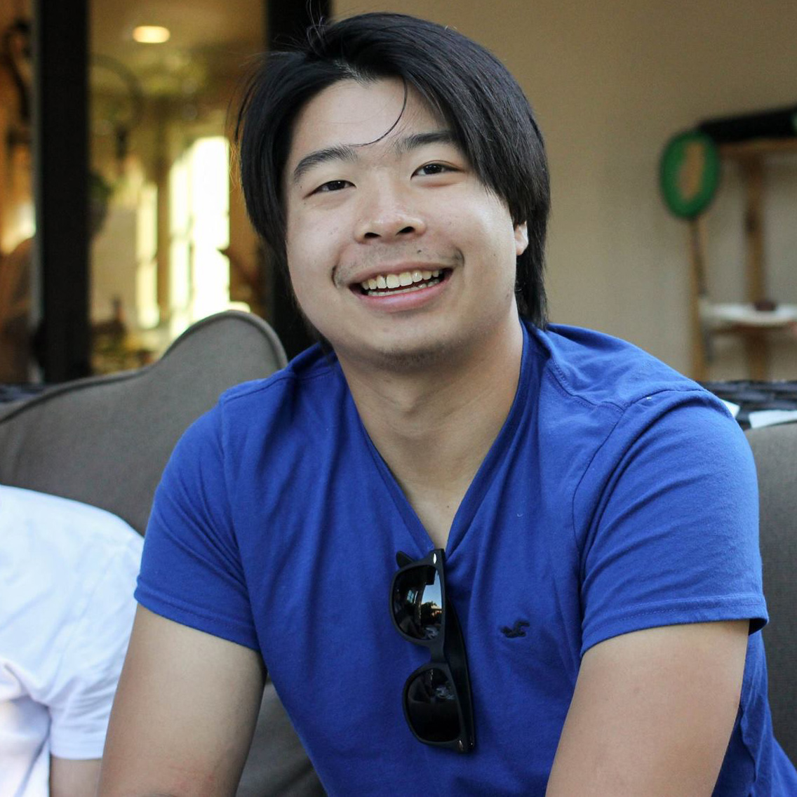

<!-- Page Header -->
{% if page.background %}
<header class="masthead change-background" style="margin-bottom: 0px;background-image: url('{{ page.background | prepend: site.baseurl | replace: '//', '/' }}')">

	{% else %}
	<header class="masthead">
		{% endif %}
		<div class="overlay"></div>
		<div class="container">
			<div class="row">
				<div class="col-lg-8 col-md-10 mx-auto">
					<div class="page-heading" style="padding: 60px; padding-bottom: 9px">
						<h1 class="frontpage">Theodore Chiu</h1>

						

						<span class="subheading">
							<p class="frontpage" style="margin-bottom: 0px;">
							<mark style="background-color: #6ba3db; color: white; padding:0;">
								I'm <strong>Theodore Chiu</strong>, a Computer Engineer.
								<br>
								I love engineering, music, and cars.
								<br>
								Have a look at some of my working <a href="projects.html"> projects</a>.
								<br>
								For more check out my academic &amp; professional <a href="resume/" >Résumé</a>.
								<br>
								Shoot me an <a href="mailto:{{ site.email }}" >email</a> anytime!
							</mark>
							</p>

						</span>
					</div>
				</div>
			</div>
		</div>
	</header>

	